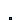
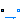

| Name | Description |
|---|---|
|  PartialAbsoluteSensor | Partial component to model a sensor that measures a potential variable |
|  PartialFlowSensor | Partial component to model sensors that measure flow properties |
Partial component to model an absolute sensor. Can be used for pressure sensor models. Use for other properties such as temperature or density is discouraged, because the enthalpy at the connector can have different meanings, depending on the connection topology. Use PartialFlowSensor instead. as signal.
| Name | Description |
|---|---|
| port |
Partial component to model a sensor that measures any intensive properties
of a flow, e.g., to get temperature or density in the flow
between fluid connectors.
The model includes zero-volume balance equations. Sensor models inheriting from
this partial class should add a medium instance to calculate the measured property.
| Name | Description |
|---|---|
| replaceable package Medium | Medium in the component |
| Assumptions | |
| allowFlowReversal | = true to allow flow reversal, false restricts to design direction (port_a -> port_b) |
| Name | Description |
|---|---|
| port_a | Fluid connector a (positive design flow direction is from port_a to port_b) |
| port_b | Fluid connector b (positive design flow direction is from port_a to port_b) |